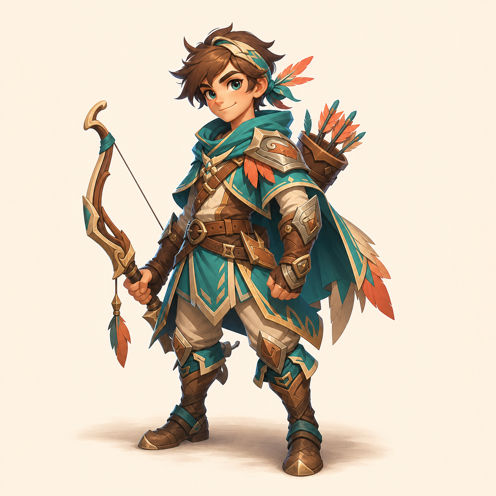
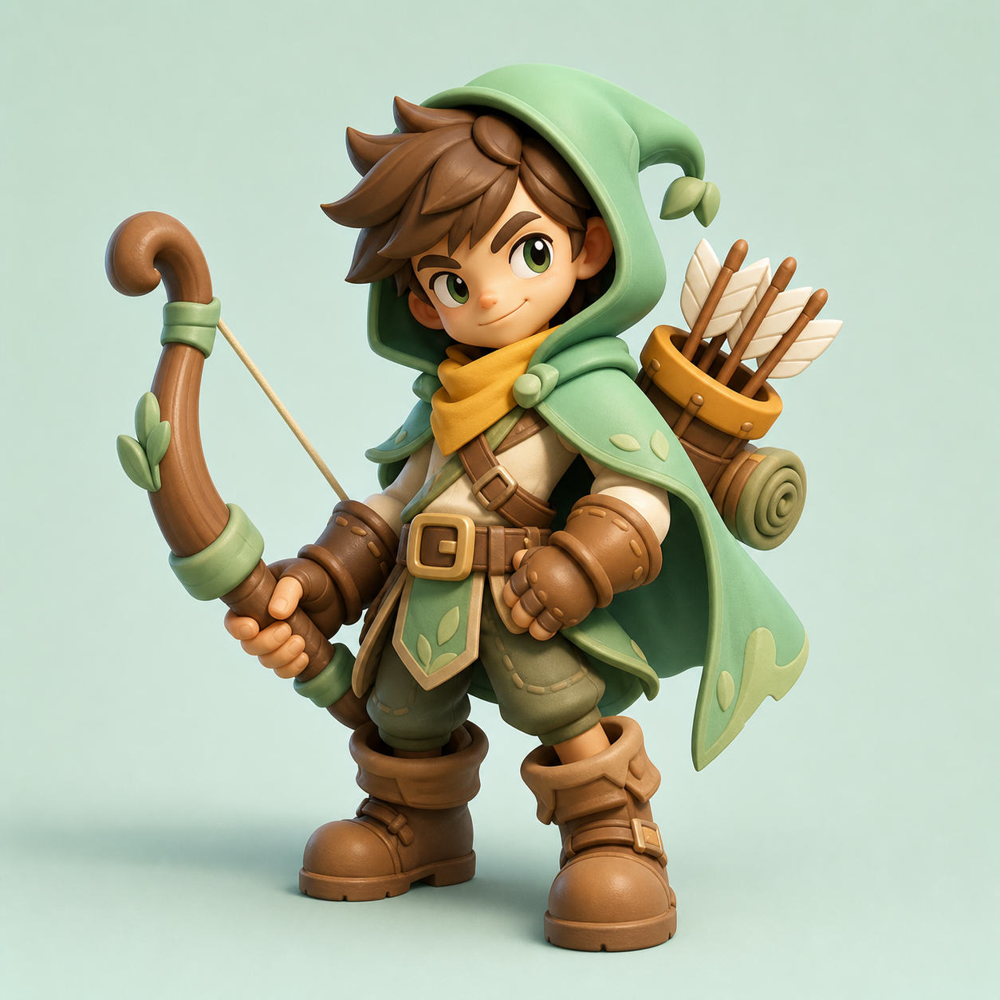
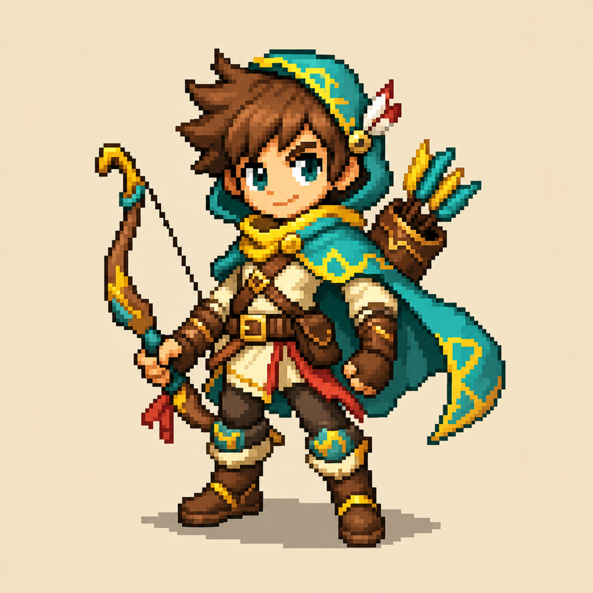
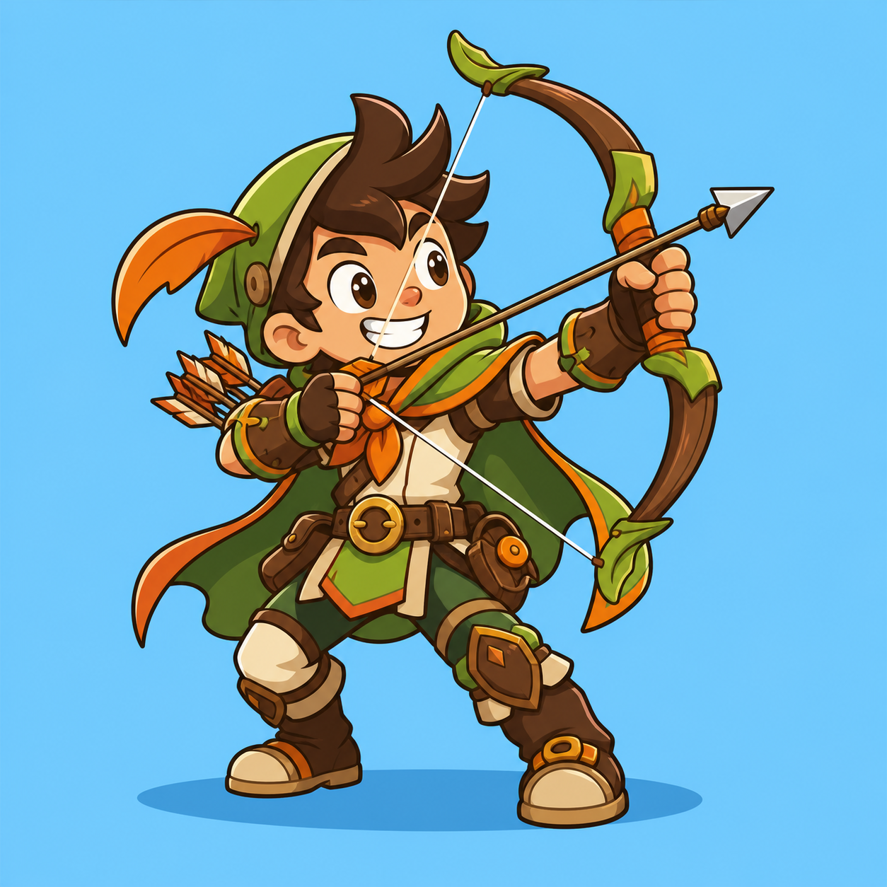
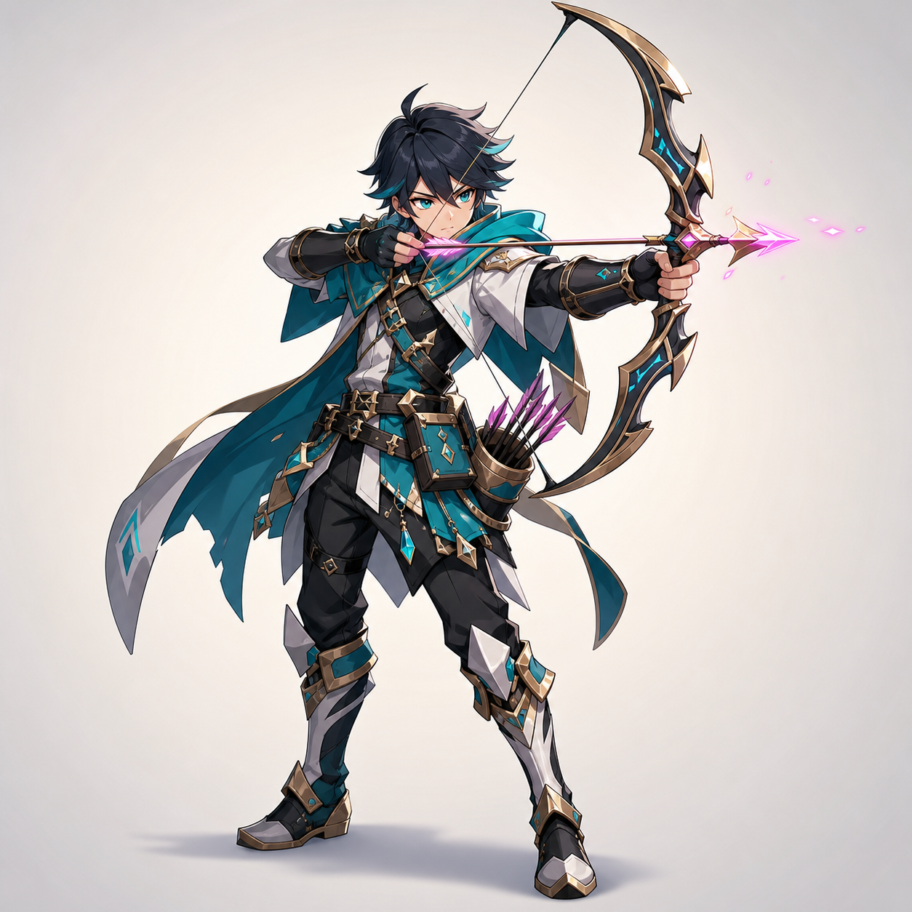
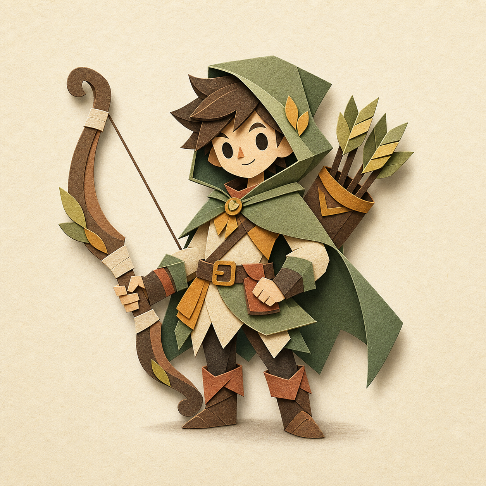
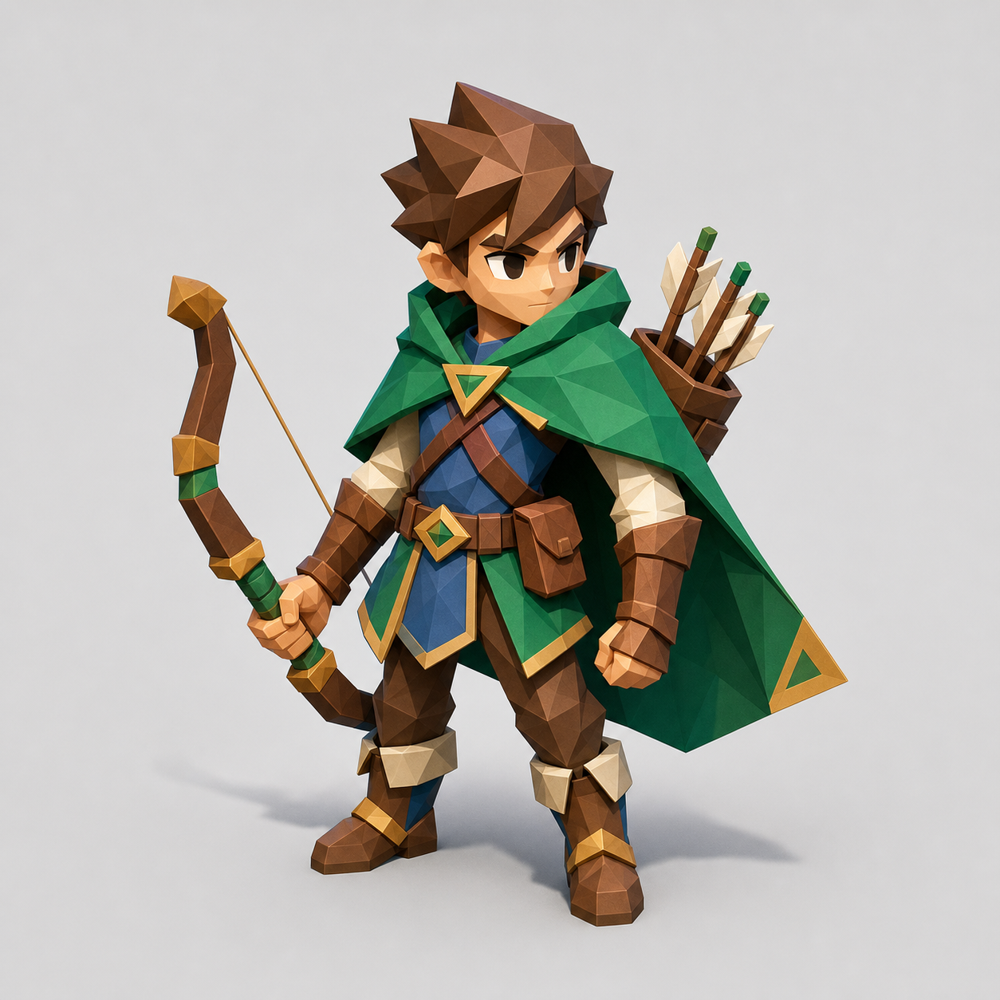
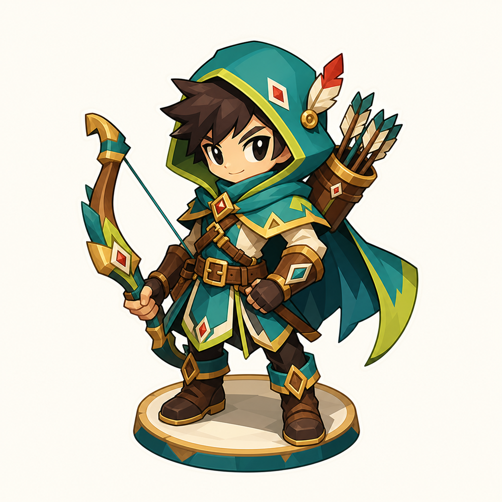

01
2D 일러스트
가장 정통적인 캐주얼 RPG 방향. 카드 일러스트, 캐릭터 선택 화면, 마케팅 이미지까지 확장성이 높습니다.
고급감카드 적합제작량 큼
기존 자산을 기준으로 삼지 않고, 게임 전체 아트 방향을 새로 정하기 위한 궁수 스타일 시안 8종입니다. 작은 헥사 보드 토큰에서도 활, 자세, 성격이 읽히는지를 우선해서 비교합니다.

가장 정통적인 캐주얼 RPG 방향. 카드 일러스트, 캐릭터 선택 화면, 마케팅 이미지까지 확장성이 높습니다.

말랑한 피규어 감성. 전투 보드 유닛, 성장 연출, 스킨 판매 구조에 가장 잘 맞는 방향입니다.

게임잼 생산성이 좋고 전투 규칙을 명확하게 보여줍니다. 감성은 강하지만 카드 보상 화면은 별도 보강이 필요합니다.

실루엣과 표정이 가장 강합니다. 모바일 작은 화면에서 캐릭터 성격을 즉시 전달하기 좋습니다.

캐릭터 팬덤형 방향. 궁수의 차지 샷, 연사, 보스전 컷인 같은 연출을 멋있게 가져가기 좋습니다.

카드, 보드게임, 헥사 타일과 잘 붙는 수공예 방향. 전투가 복잡해져도 화면 피로도가 낮습니다.

전술 보드와 가장 자연스럽게 이어지는 3D 방향. 애니메이션과 타일 상호작용을 단순하게 만들 수 있습니다.

헥사 보드 유닛과 UI 아이콘에 바로 쓰기 좋은 방향. 제작 범위가 작을 때 가장 안정적입니다.